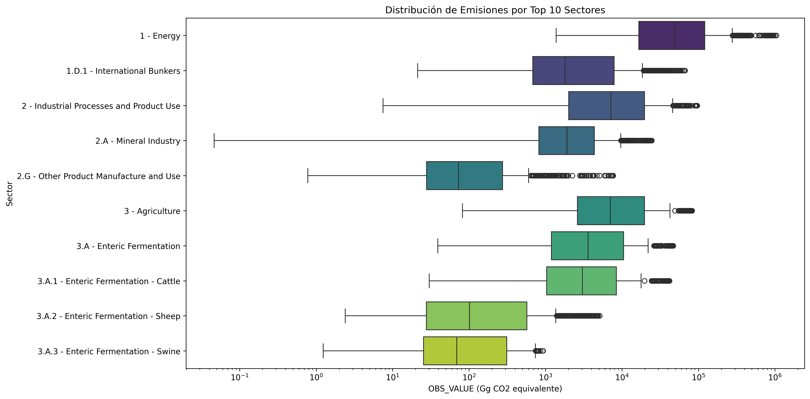
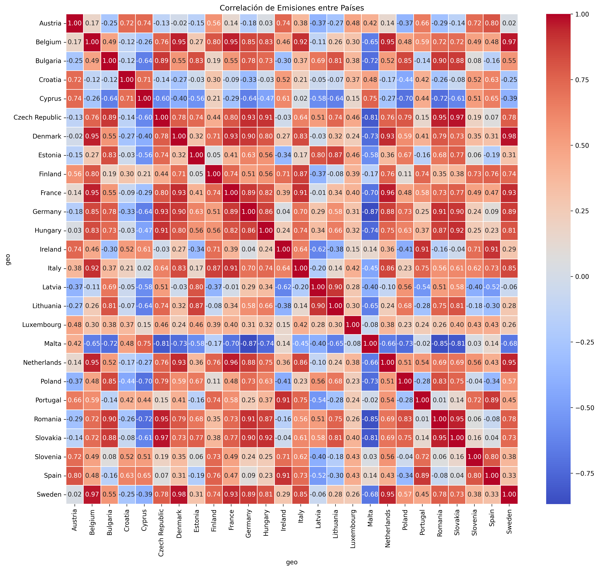

Presentación y Fuente
Este informe presenta un análisis de las emisiones de gases de efecto invernadero en la Unión Europea, con un enfoque en identificar tendencias, patrones y valores atípicos. Se incluyen visualizaciones que facilitan la comprensión de los datos y permiten una exploración interactiva.
El siguiente análisis visual representa las emisiones de gases de efecto invernadero en la Unión Europea, medida en Gigagramos de CO2 equivalente (Gg CO2eq). Los datos provienen de la Agencia Europea de Medio Ambiente (EEA) y cubren el período 2010-2023 utilizando la clasificación IPCC 2006.
- Fuente de datos: European Environment Agency (EEA)
- Última actualización: July 2025
- Métrica: Emisiones brutas (inventario nacional)
Captura de Carbono
La captura de carbono es una tecnología clave en la lucha contra el cambio climático. En la Unión Europea, se han implementado varios proyectos de captura y almacenamiento de carbono que han permitido reducir las emisiones netas de CO2. A continuación, se presentan algunos datos relevantes:
- Proyectos en operación: 15 proyectos de captura de carbono en diferentes sectores.
- Capacidad total de captura: 5 millones de toneladas de CO2 al año.
- Emisiones evitadas: 2 millones de toneladas de CO2 desde 2010.
Las tecnologías de captura y almacenamiento de carbono (CCS) han mostrado eficacia en la reducción de emisiones netas de CO₂. No obstante, para alcanzar los objetivos climáticos a largo plazo de la UE, es necesario ampliar su adopción mediante mayores inversiones y políticas de fomento tecnológico.
Nota: La utilización de fuentes oficiales como la Agencia Europea de Medio Ambiente (EEA) aporta solidez y trazabilidad a los datos. La métrica CO₂ equivalente (CO₂eq) permite integrar distintos gases de efecto invernadero en una única medida comparable, facilitando el análisis climático integral.
Datos generales
El dataset analizado contiene información sobre emisiones de gases de efecto invernadero con:
- Total de registros: 90236
- Total de columnas: 10
- Columnas numéricas: TIME_PERIOD, OBS_VALUE
Estadísticas Descriptivas
Las estadísticas descriptivas de las emisiones (OBS_VALUE) son las siguientes:
| Estadística | Valor |
|---|---|
| Media | 9.499675e+03 |
| Mediana | 4.442852e+02 |
| Desviación estándar | 5.011073e+04 |
| Rango | 1.288425e+06 |
| IQR | 2.695641e+03 |
Interpretación: El valor medio de emisiones es considerablemente elevado, indicando la presencia de valores extremos que influyen en la distribución. La diferencia sustancial entre la media y la mediana sugiere una distribución sesgada, con la mayoría de los países emitiendo por debajo del promedio. La alta desviación estándar confirma una gran dispersión en los datos. Las estadísticas descriptivas indican una gran variabilidad en las emisiones, lo que sugiere que algunos países son responsables de una parte significativa de las emisiones totales. Esto puede ser un punto de partida para políticas de reducción de emisiones más específicas.
Detalles de la Metodología
Los datos fueron procesados utilizando Python y las bibliotecas Pandas y Matplotlib. Se realizaron las siguientes etapas:
- Lectura del archivo CSV con los datos de emisiones.
- Filtrado de valores negativos y nulos en OBS_VALUE.
- Cálculo de estadísticas descriptivas (media, mediana, desviación estándar, rango, IQR).
- Generación de visualizaciones estáticas e interactivas para explorar la distribución de emisiones.
- Análisis de correlaciones entre países y sectores.
Visualizaciones
Las siguientes visualizaciones muestran la distribución de las emisiones, comparativas entre sectores y países, así como análisis de tendencias a lo largo del tiempo.
Se han generado gráficos estáticos e interactivos para facilitar la exploración de los datos.
Distribución de Emisiones (OBS_VALUE)

Interpretación: El histograma muestra una distribución sesgada a la derecha, lo que indica que la mayoría de los países tienen emisiones relativamente bajas, mientras que unos pocos países tienen emisiones extremadamente altas. Esto sugiere la necesidad de políticas específicas para los países con mayores emisiones.
Distribución Sectorial
Interpretación: El diagrama de caja revela que ciertos sectores industriales tienen emisiones significativamente más altas que otros. Esto puede ayudar a identificar sectores prioritarios para la implementación de medidas de reducción de emisiones.
Comparativa por País
Interpretación: Este gráfico muestra la variabilidad de las emisiones entre países. Algunos países tienen emisiones muy altas, lo que indica que son los principales contribuyentes a las emisiones de gases de efecto invernadero en la región.
Evolución Temporal

Interpretación: La serie temporal muestra una tendencia general a la baja en las emisiones a lo largo de los años, lo que sugiere que las políticas implementadas están teniendo un efecto positivo en la reducción de emisiones en la Unión Europea.
Matriz de Correlación de Emisiones
Correlaciones Significativas (>0.8)
| País 1 | País 2 | Correlación |
|---|
Interpretación: La matriz de correlación revela relaciones significativas entre ciertos países, lo que podría reflejar similitudes en sus estructuras económicas, políticas energéticas o intensidad industrial. Estas correlaciones pueden ser útiles para diseñar estrategias regionales coordinadas de mitigación.
Análisis de Valores Atípicos
Interpretación: El análisis de outliers identifica países y sectores con emisiones excepcionalmente elevadas. Estos valores atípicos deben ser analizados más a fondo, ya que pueden estar asociados a prácticas industriales específicas, errores de reporte o condiciones económicas particulares.
Top 5 Sectores Contaminantes
Interpretación: Los gráficos muestran que un pequeño número de sectores es responsable de la mayor parte de las emisiones. Esto sugiere que las políticas de reducción de emisiones deben centrarse en estos sectores clave para lograr un impacto significativo.
Dispersión de Emisiones

Interpretación: El gráfico de dispersión muestra la relación entre las emisiones y el tiempo, lo que puede ayudar a identificar tendencias y patrones en las emisiones a lo largo de los años. Esto es crucial para evaluar la efectividad de las políticas implementadas.
Comparación Regional
Emisiones Norte vs Sur

Interpretación: La comparación entre las regiones norte y sur revela diferencias significativas en las emisiones, lo que puede estar relacionado con factores económicos, industriales y de políticas ambientales. Esto sugiere que las estrategias de reducción deben ser adaptadas a las características regionales.
Evolución Países Nórdicos
Interpretación: La evolución de las emisiones en los países nórdicos muestra una tendencia a la baja, lo que sugiere que estos países están implementando políticas efectivas para reducir sus emisiones de gases de efecto invernadero.
Conclusiones
- Variabilidad significativa en las emisiones entre diferentes sectores, con Total emissions (UNFCCC) como el sector más contaminante.
- Se detectaron 981 valores atípicos en OBS_VALUE que requieren investigación adicional.
- El país con mayores emisiones promedio es Germany.
- La tendencia general de emisiones es decreciente desde 2010.
- Se filtraron 6887 valores negativos en OBS_VALUE, posiblemente debido a errores de datos o ajustes por captura de carbono.